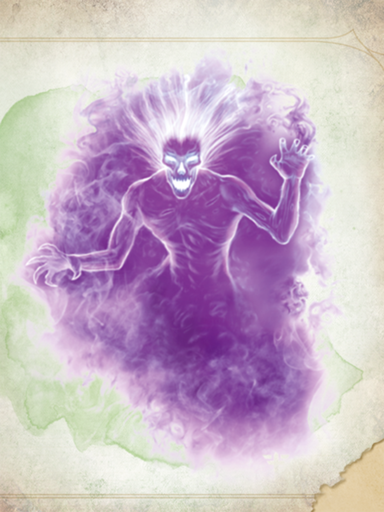

La bambinaia e i bambini in soffitta
Lo spettro della bambinaia
Al terzo piano, in una stanza gelida che sembra quella della bambinaia, Logan, Bastian e Floki perquisiscono l'ambiente. Floki apre una porta e sente un freddo pungente: appare uno spettro, una giovane donna scheletrica e terribile. Parte il combattimento. Lo spettro urla, e ogni contatto con lui porta visioni:
- Bastian vede la bambinaia che culla un neonato.
- Logan, colpendolo con la luce, vede la donna incinta respinta da un uomo alto.
- Floki sente un bambino piangere.
- Bastian vede poi una nobildonna che guarda con disprezzo la ragazza col bambino.
- Floki, afferrato per il collo, vede la ragazza trucidata dai nobili.
Lo spettro fugge, poi torna per uccidere Chirrut. Chirrut cade, ma il paladino lo salva.

Il quadro
Nella stanza padronale Floki trova un quadro e viene posseduto dallo spettro. Rivive tutta la vita della bambinaia fino alla morte, sentendo le coltellate nel proprio corpo. Poi scaccia lo spettro e dà fuoco al quadro.
La verità sulla bambinaia
Logan e Floki aprono la stanza della giovane delle visioni. La bambinaia era stata violentata dai nobili e aveva dato alla luce Walter, il bambino che manca. In casa accadevano cose tremende, e i padroni veneravano un uomo alto, pallido ed elegantissimo, con mantello e bastone. Alla fine i padroni hanno ucciso la bambinaia a coltellate.
La soffitta
Zero, il tasso di Logan, guida il gruppo verso la parete dove stava lo spettro: lì c'è una porta segreta. Una scala sale in una soffitta ancora più fredda. Chirrut scassina una porta chiusa col lucchetto: è la stanza dei bambini, con due scheletri. Sono i bambini visti fuori dalla casa.

Rose e Thorn
Chirrut prende il pupazzo di Thorn e compaiono i due fratelli. Dicono che dalla casa non si può uscire, e che i loro genitori sono stati uccisi dal «signore col bastone» dopo aver torturato delle persone. Poi Rose entra nel corpo di Chirrut e Thorn in quello di Bastian.
Nella stessa stanza c'è una casa delle bambole, copia esatta dell'edificio. Studiandola, il gruppo scopre un passaggio segreto che scende dal terzo piano fino alla stanza delle torture nel sotterraneo.
Il sotterraneo
Nel sotterraneo il gruppo sente una cantilena. Floki passa vicino a un corridoio da cui sbuca un grick, e Floki cade senza vita. Gli altri combattono mentre Floki fallisce il primo tiro salvezza e al secondo fa 1. Chirrut uccide il grick strozzandolo. Bastian tenta di salvare Floki, ma esce di nuovo un 1.
Rose prende allora il controllo di Floki e guida il gruppo in una stanza con una bara. Rose entra nella bara, poi anche Thorn, con Floki tra le braccia di Logan. Il gruppo torna in soffitta a riposare.